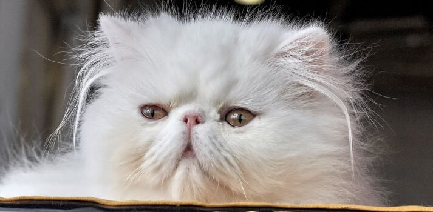
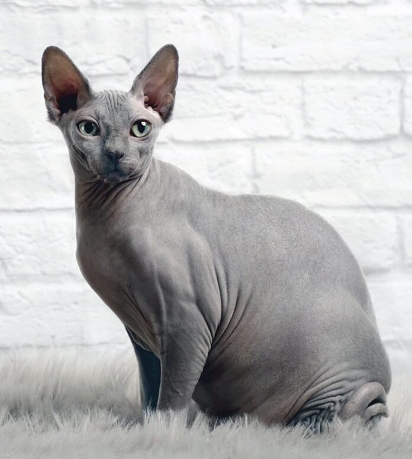
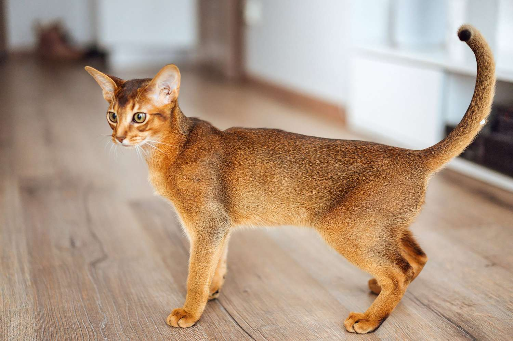
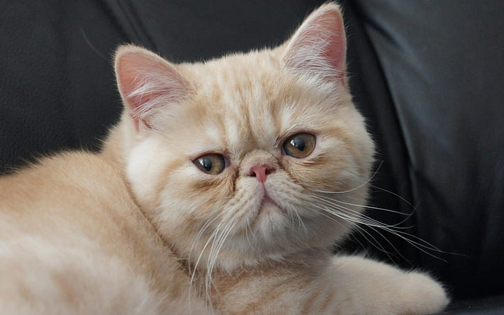
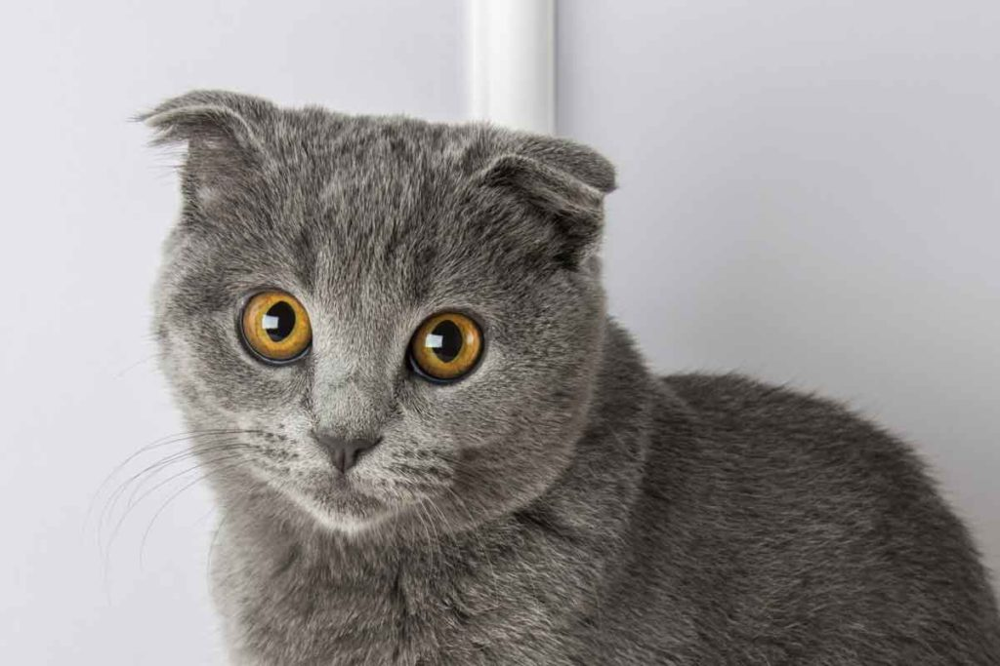
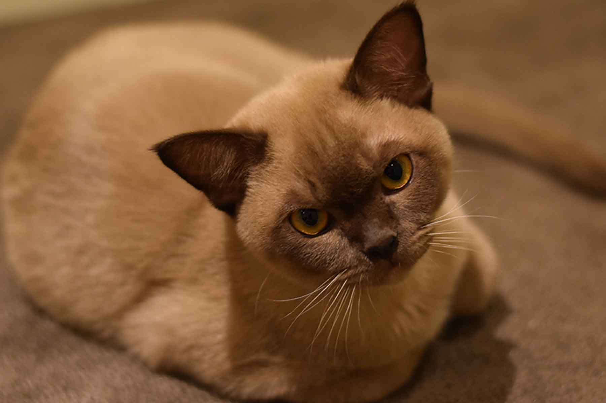

Domače mačke so po anatomiji podobne ostalim mačkam z dolgim gibkim telesom, hitrimi refleksi, ostrimi vpotegljivimi kremplji in zobmi, ki so prilagojeni na ubijanje manjšega plena. Kljub temu da so mačke samotarski lovci, vzpostavijo osebki na istem ozemlju socialno hierarhijo, ki jo vzdržujejo z boji in raznovrstnimi načini komunikacije, od različnih vrst oglašanja do feromonov in telesne govorice.[2]
Danes so v svetovnem merilu za psi najbolj razširjeni domači ljubljenčki oz. so v nekaterih državah celo bolj priljubljene od psov,[3] prostoživeče mačke pa uspevajo v raznolikih habitatih po vsem svetu in zaradi svoje številčnosti ogrožajo populacije malih sesalcev in ptic, posebej na otokih.[2]
Za dejavnosti vzrejanja, vzgoje in neformalnega preučevanja mačk se uporablja skupni izraz felinologija, znanstveno pa mačke proučujejo zoologi.
ZDAJ PA ŠE KRATEK OPIS
Domača mačka je nastala z udomačitvijo divje mačke pred 5000 leti. Male mačke, med katere spadajo domače mačke, za razliko od velikih mačk ne morejo rjoveti, a lahko mijavkajo in predejo.
Ena od značilnosti mačk je, da nikoli ne padejo na hrbet. To je zato, ker se lahko v zraku zasučejo s hrbta na trebuh v manj kot v dveh sekundah (1,6 s). K temu ogromno pripomore zelo razvit vestibularni aparat (čutilo za ravnotežje), ki bi ga po učinkovitosti lahko primerjali z giroskopom. Poleg tega razkorači noge, da s tem zveča zračni upor, zgradba njene hrbtenice, ki deluje kot vzmet, pa poskrbi, da je padec čim bolj ublažen. Tako so najpogostejše poškodbe, kadar do njih sploh pride, poškodbe spodnjega dela telesa in nog. Zanimivo pa je, da se mačke redkeje poškodujejo pri večjih višinah, saj imajo tako dovolj časa, da se odzovejo.
Mačke so predvsem nočne živali, zato imajo tudi dobro razvite oči, s katerimi lažje vidijo v temi. Mačje oči so namreč kar precej velike, da v temi lahko zajamejo več svetlobe. Obrnjene so naprej, da lahko na nočnem pohodu sprejmejo velike količine svetlobe. Položaj oči mačkam omogoča, da lahko zelo dobro ocenijo globino in razdaljo. To jim pride zelo prav pri lovu. Njihov vidni kot je 85°.
Kot odličen lovec mora imeti mačka tudi zelo razvit sluh in voh. Mačke slišijo za dve oktavi višje tone kot ljudje. Zaznavajo namreč tudi ultrazvočna valovanja do 60.000 Hz, medtem pa nizke tone slišijo slabše.
V temi mačkam pri izogibanju oviram pomagajo tudi občutljivi brki. Njihove tipalne dlake (vibrisi) imajo približno 200 živčnih vlaken in tako delujejo kot nekakšen radarski sistem in jim pomagajo pri izogibanju oviram.
Poznamo dolgodlake in kratkodlake pasme mačk. Dolžina dlake predstavlja kvalitativno lastnost za uvrščanje pasem.
Mačke imajo po navadi okoli maja 2-4 mladiče, ki jih namestijo na najbolj udobno in skrito mesto, ki ga najdejo. Mačke skrbijo tudi za mladiče, ki niso njihovi.
Dolžina dlake
Norveška gozdna mačka, dolgodlaka pasma
Egipčanska mau mačka, kratkodlaka pasma
Do pred kratkim neznan gen, ki določa dolžino dlake je bil označen kot lokus z dominantnim alelom L, ki določa kratko dlako, in recesivnim alelom l, ki določa dolgo dlako. Tako imajo dolgodlake mačke alela l/l – npr. pasme somalijka, perzijka, maine coon, norveška gozdna mačka. Kratkodlake pa imajo alela L/L ali L/l – npr. pasme abesinka, egipčanska mau, orientalka.
V analizah so raziskali mačji gen FGF5 (fibroblastni rastni faktor 5) kot možnega povzročitelja variabilnosti dolžine dlake pri mačkah. Uporabili so genomsko sekvenco samice abesinke, ki spada med kratkodlake pasme. Analize so izvajali na eksonu 1 in eksonu 3. Analizirali so več skupin mačk glede na njihov rodovnik, fenotip dlake ter tudi križance med kratkodlakimi in dolgodlakimi mačkami. Za ugotavljanje mutacij gena so uporabljali računalniška programa, ki sta iskala spremembe aminokislin in njihov možen vpliv na fenotip dlake. Našli so štiri mutacije gena FGF5, ki povzročajo spremembe aminokislin, delujejo kot stop kodoni, ena mutacija pa se je izkazala kot naravna varianta tega gena.
Z identifikacijo mutacij FGF5 v tej raziskavi so mačke postale tretja vrsta sesalcev, ki imajo opisano asociacijo med fenotipom dolžine dlake in polimorfizmom gena FGF5. Genotipizacija FGF5 udomačenih mačk bo pomagala vzrediteljem mačk pri določanju prenašalcev recesivnega alela l za dolgo dlako.
Zdaj pa še kratka zgodovina
V pozni egipčanski dobi je boginja Bastet spremenila svojo podobo. Do takrat so jo namreč upodabljali kot žensko z mačjo glavo, v poznejšem obdobju pa so jo prikazovali kot mačko v celoti. Za Egipčane je bila podoba milosti in bogov, zato so tudi mačke po božje častili. Če je kdo poškodoval mačko, je bil za to strogo kaznovan. V bogatih družinah so jih krasili z nakitom, ko pa je mačka umrla naravne smrti so jo mumificirali in pokopali v sarkofagu v njeni naravni obliki. Eden od razlogov za čaščenje mačk je bilo dejstvo, da so lovile glodavce, ki so povzročali škodo na poljščinah, kar je prvi znani dokumentirani primer biološkega nadzora škodljivcev.
Kljub temu, da so Egipčani skrbno varovali mačke pred tujci, so se jih polastili feničanski trgovci, ki so jih zanesli v Evropo, poleg tega pa so jih iz Egipta kot koristne pomočnike v boju proti glodavcem tihotapili tudi potujoči menihi na poti na Daljni vzhod in rimski vojaki. S širjenjem in prevzemanjem vloge delovne živali je kult mačke počasi zamrl. Kljub temu se je še več stoletij kasneje na Kitajskem ohranilo prepričanje, da prinašajo srečo, na Japonskem pa so postavljali kipce mačk za odganjanje škodljivcev. Po vzponu krščanstva v Evropi je želela cerkvena oblast tovrstna poganska verovanja zatreti, zato so začeli prikazovati mačke v bolj zlovešči luči, kot prinašalke nesreče ali pomočnice čarovnic, kar se je v določeni meri prav tako ohranilo do danes.
Do preostanka sveta so mačke zanesli evropski izseljenci v dobi kolonizacije, spet v vlogi lovca na glodavce. Že Kolumbova odprava, ki je odkrila Novi svet, je imela na krovu več mačk, ki so lovile podgane. Med pomorščaki se je na ta račun razvila tudi vraža, da prinašajo srečo in znajo napovedovati nevihte.
PASME MAČK
Na svetu obstaja veloki pasem mačk kot so
siamska mačka
Britanska kratkodlaka
Maine Coon (moja najljubša)
perzijska mačka 
Lutka iz cunj
mačka sfinga 
Ameriška kratkodlaka
Abesinska 
Eksotična kratkodlaka 
Škotska klapouha 
Burmanska mačka
Birman 